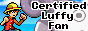
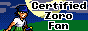
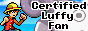
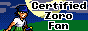

•Welcome to my graphic bazaar!
•I decided to make this a graphics bazaar, a place
where I will add in new buttons, original and edited, and
maybe even more webgraphic stuff every now and then. It'll
be small for now, but I hope you enjoy any buttons I have
to offer here.
•If you want to help make this collection grow, feel free to DM me any sort of button you'd like me to feature and any associated link you'd like to anchor onto it.
•Oh and of course credit is appreciated, but it isn't necessary at all. Enjoy!
•If you want to help make this collection grow, feel free to DM me any sort of button you'd like me to feature and any associated link you'd like to anchor onto it.
•Oh and of course credit is appreciated, but it isn't necessary at all. Enjoy!
Buttons


 





Blinkies
•My Collection


Stamps
•My Collection


Big Stamps
•My Collection


Favicons
•My Collection


Dividers
•My Collection


Charms
•My Collection